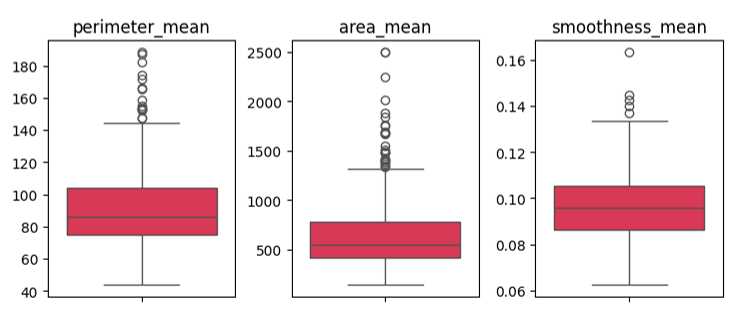
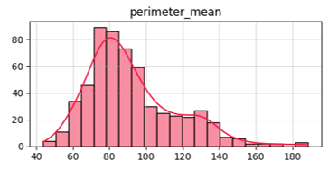
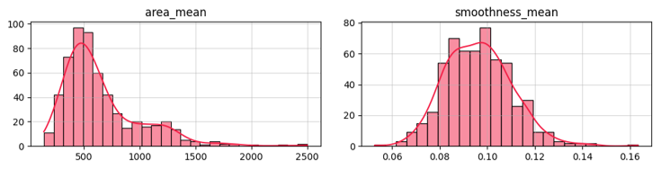

Deep Learning - Classificação de Câncer de Mama

Equipe do Projeto
Disciplina: Redes Neurais com TensorFlow
Base de Dados
Fonte do Dataset
Fonte: Kaggle - Breast Cancer Dataset
Origem Original: Wisconsin Diagnostic Breast Cancer (WDBC) Database
Criado por: Dr. William H. Wolberg, University of Wisconsin
Benchmark: Amplamente utilizado na literatura científica
569
amostras
33
colunas
0
linhas nulas
1
coluna nula
Distribuição das Classes
Benigno (62,7%)
Maligno (37,3%)
Casos Benignos
357
62,7% do total
Casos Malignos
212
37,3% do total
Análise de Balanceamento
Dataset moderadamente desbalanceado
Adequado para treinamento
Adequado para treinamento
Justificativa do Tamanho:
- Adequado para redes neurais simples
- Comparável a outros estudos na área médica
Distribuição dinâmica das variáveis (amostras de colunas)

Observações
Forte presença de outliers
Valores extremos identificados em todas as variáveis
Necessidade de normalização
Escalas muito diferentes entre variáveis
Variáveis com dimensões muito distantes
(de 0.06 até 2500)
Robust Scaler
Recomendado para lidar com outliers
Distribuições das Variáveis


Features: Complexidade e Desafios
Estrutura dos Dados: 30 Features Numéricas
- Mean (média): Valor médio da característica
Fórmula: 10 Características × 3 Estatísticas = 30 Features

Análise Exploratória
Pairplot

Correlações e Distribuições Visualizadas
- Separação clara entre algumas classes
- Padrões de distribuição revelados
Resultados Finais
96.5%
Acurácia
Performance geral
97.8%
Recall (Maligno)
Crítico clinicamente
95.2%
Precision
Reduz falsos alarmes
Comparação de Recall por Modelo
Resultados de Recall por Modelo
100.0%
Dummy
Baseline
90.48%
Regressão Logística
Linear
92.86%
Keras Base
Padrão
88.24%
Keras Otimizado
Grid Search
O Keras Base apresentou o melhor recall (92.86%), detectando mais casos malignos corretamente
Matriz de Confusão

Convergência do Modelo

Curva ROC

Importância Clínica dos Resultados
Recall 97.8%
Detecta corretamente 97.8% dos casos malignos
Apenas 1 falso negativo
Muito baixo risco de perder casos malignos
AUC-ROC elevado
Excelente capacidade de discriminação
Convergência estável
Modelo bem treinado sem overfitting